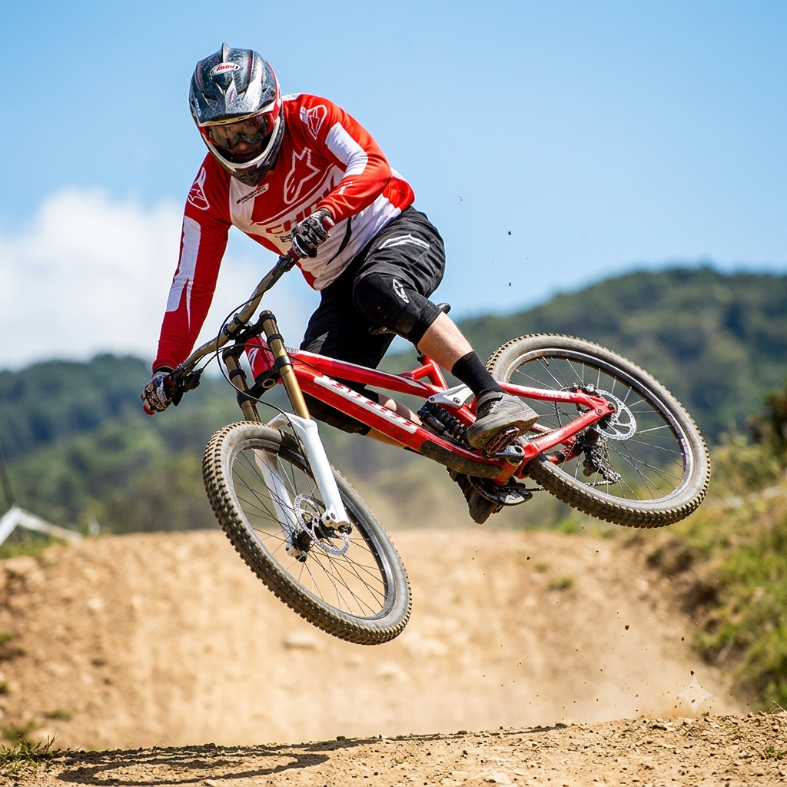
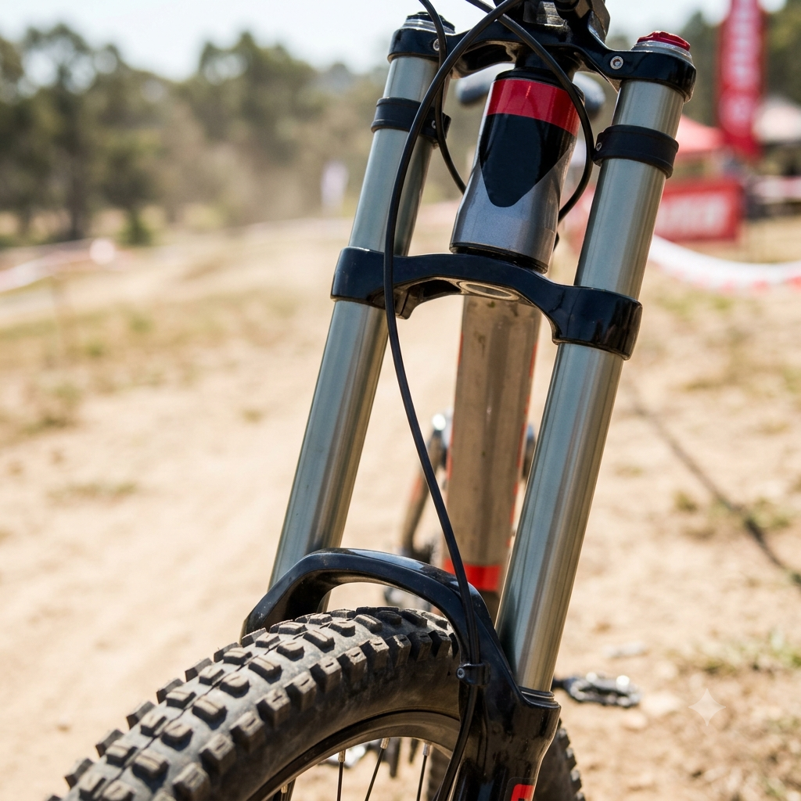
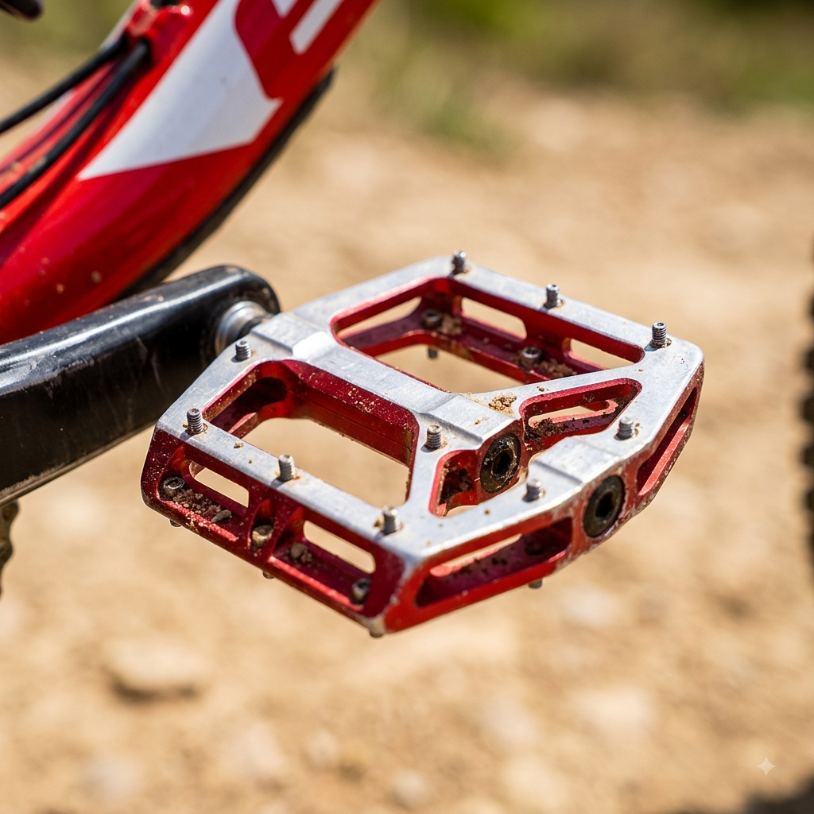

O que é o Freeride de verdade?
Por: Erick Ruan de Oliveira Blum
O Freeride vai além das pistas demarcadas. Trata-se de estilo, criatividade e de dominar terrenos desafiadores com grandes saltos e drops.
Fonte: Red Bull Rampage
Tudo sobre manobras, pistas, equipamentos e o estilo de vida no Freeride

Por: Erick Ruan de Oliveira Blum
O Freeride vai além das pistas demarcadas. Trata-se de estilo, criatividade e de dominar terrenos desafiadores com grandes saltos e drops.
Fonte: Red Bull Rampage

Por: Erick Ruan de Oliveira Blum
Para aguentar o impacto de saltos gigantescos, as suspensões de 200mm são essenciais. Elas garantem que a bike absorva o choque sem quebrar.
Fonte: Pinkbike
Por: Erick Ruan de Oliveira Blum
Entortar a bike de lado no ar e alinhar de volta antes de pousar requer técnica, controle de corpo e muita prática no bikepark.
Fonte: Vital MTB

Por: Erick Ruan de Oliveira Blum
Usar a pressão correta nos pneus previne furos em manobras violentas e garante a aderência necessária nas curvas de terra.
Fonte: MTB Magazine

Por: Erick Ruan de Oliveira Blum
No Freeride a queda faz parte do aprendizado. Capacete Full-Face, colete e joelheiras são essenciais para manter a segurança nos treinos.
Fonte: Guilherme Renke

Por: Erick Ruan de Oliveira Blum
Embora alguns prefiram estar travados na bike, o pedal plataforma permite soltar o pé rápido em manobras perigosas e correções de emergência.
Fonte: Pedala Mais